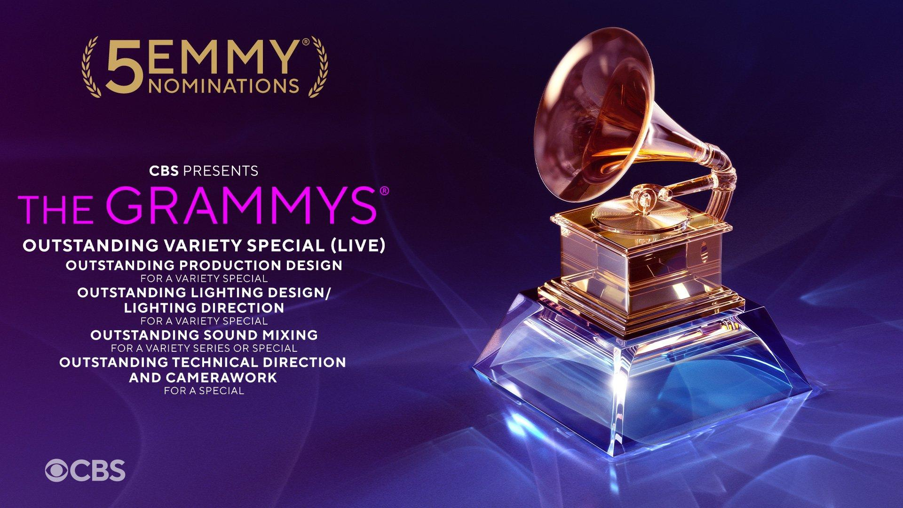
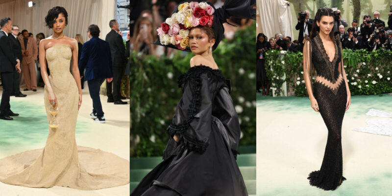
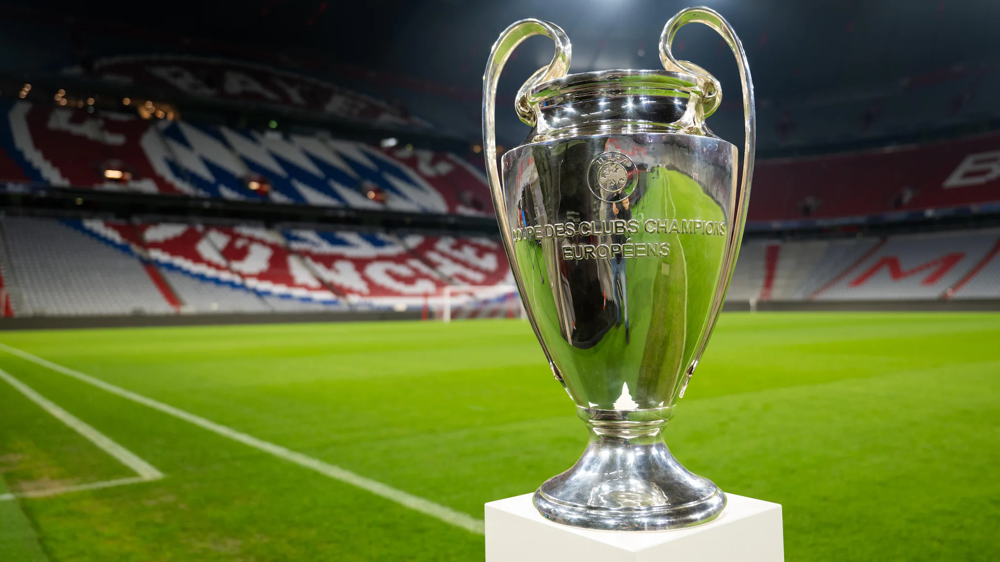

The 66th Annual Grammy Awards took place on February 4, 2024, at the Crypto.com Arena in Los Angeles, celebrating outstanding achievements in music from October 1, 2022, to September 15, 2023. Hosted by Trevor Noah for the fourth consecutive year, the event featured memorable performances and significant milestones. Taylor Swift made history by becoming the first artist to win Album of the Year four times. Miley Cyrus earned her first Grammy with "Flowers," and Billie Eilish's contribution to the Barbie soundtrack garnered Song of the Year. Victoria Monét's recognition as Best New Artist highlighted her rising prominence in the music industry.
The 2024 Met Gala, held on May 6 at the Metropolitan Museum of Art in New York City, embraced the theme “Sleeping Beauties: Reawakening Fashion”, with a dress code titled “The Garden of Time”. This theme drew inspiration from J.G. Ballard's short story, inviting attendees to explore the interplay between fashion, nature, and the passage of time.
The 2024–25 UEFA Champions League is approaching its climax, with the final set to take place on Saturday, May 31, 2025, at the Allianz Arena in Munich, Germany. This season marks the first under the new "Swiss system" format, featuring 36 teams in a single league phase, each playing eight matches against different opponents.
